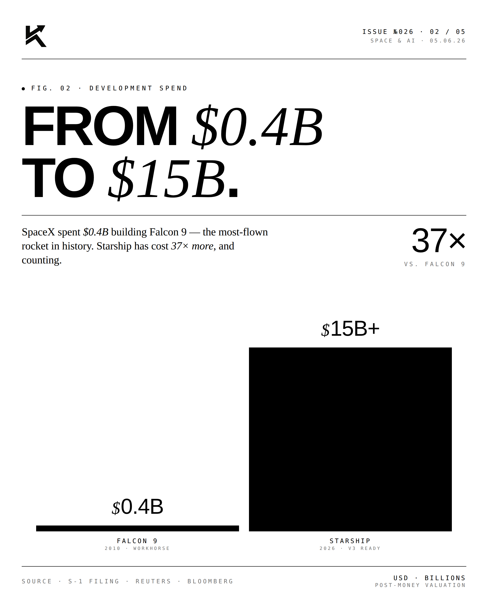
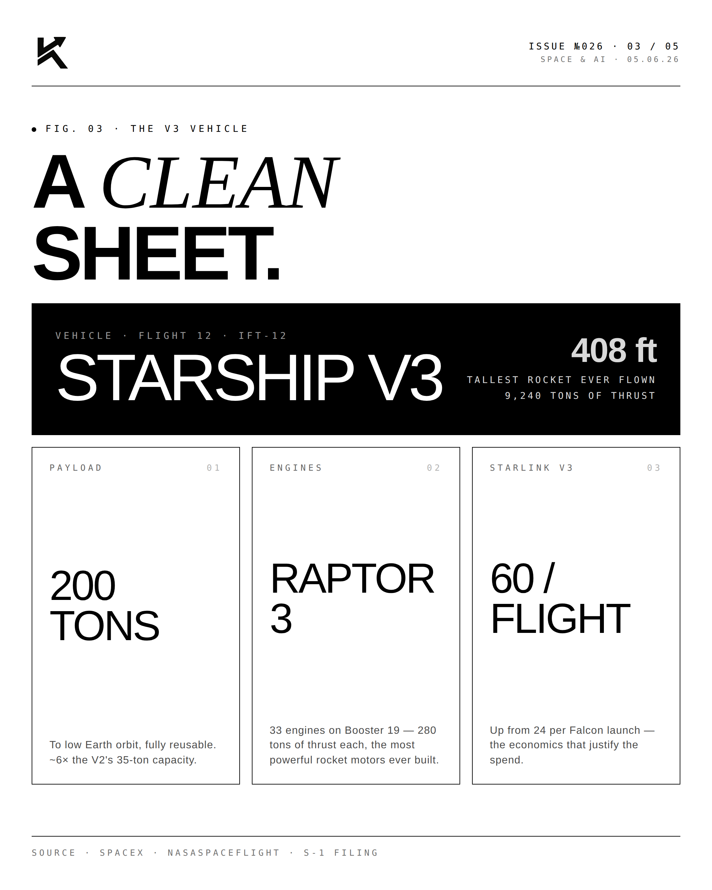
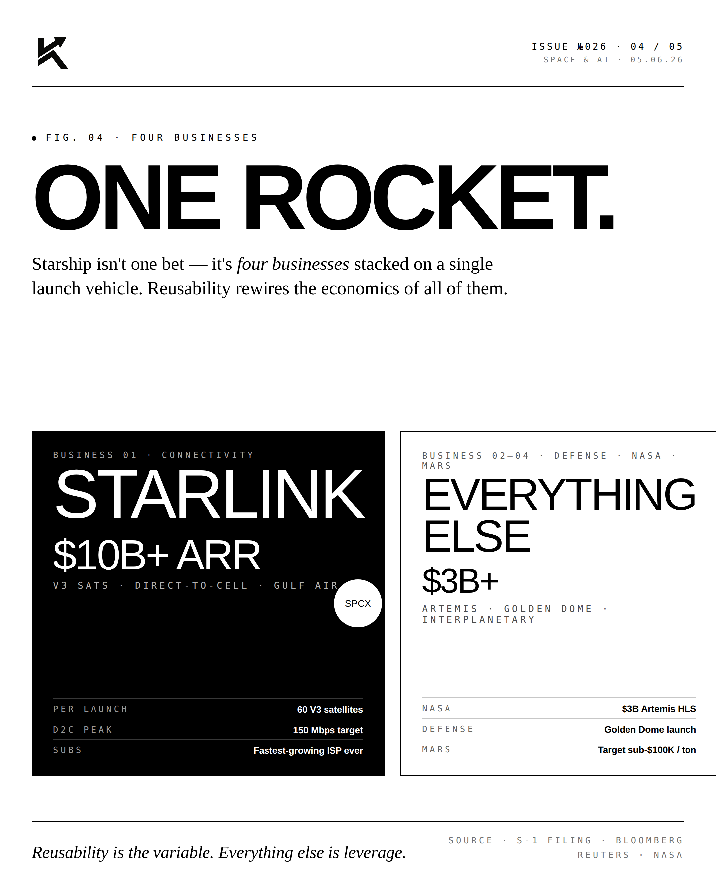
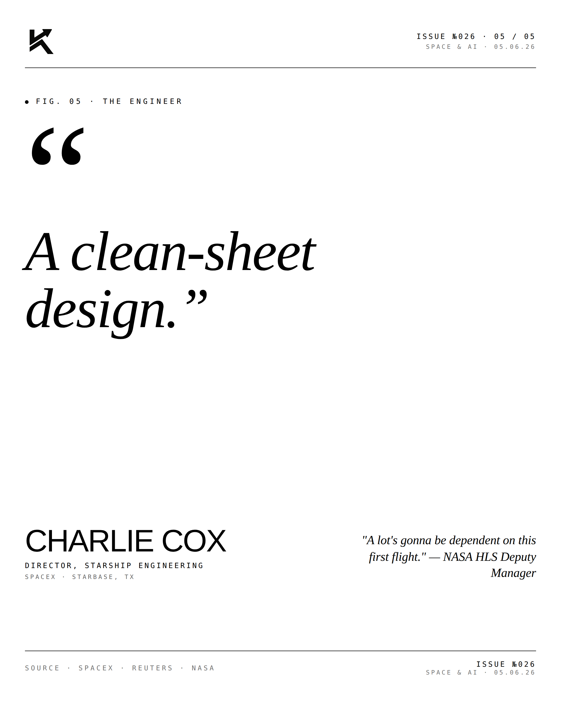

Starship.
SpaceX raised $15 billion to fund Starship. The largest single-program capital allocation in private aerospace history. The Mars architecture has its checkbook.

The Spend.
The $15B raise is structured to fund Starship through commercial viability — Starlink V3 deployment, Artemis lunar missions, and the first Mars cargo flights. This is not seed capital. This is industrial-scale program financing for a vehicle that, once operational, will cut launch costs by 27× against Falcon 9.

The Specs.
Starship V2 carries ~150 tons to LEO. V3 (in development, first flight imminent) targets 200+ tons. Full reusability — both stages return and refly. $100/kg launch cost target at scale. The economic transformation of the space economy depends on these numbers being real.

The Stack.
The same raise funds the broader Mars architecture — orbital refueling, propellant depots, surface infrastructure. Starship is the centerpiece, but the entire architecture only works if every layer works. $15B is the down payment.
"Mars is
the plan."ELON MUSKFounder · SpaceX
"The objective hasn't changed in twenty years. Build the largest, cheapest, most reliable launch vehicle in history. Make humanity multiplanetary. The rest is engineering."


$15B in. Mars is no longer rhetoric. It's the project.
Disclosure
The author is a Limited Partner in 1789 Capital, which holds a position in SpaceX. Personal commentary and editorial analysis. Not investment advice, not an offer or solicitation.